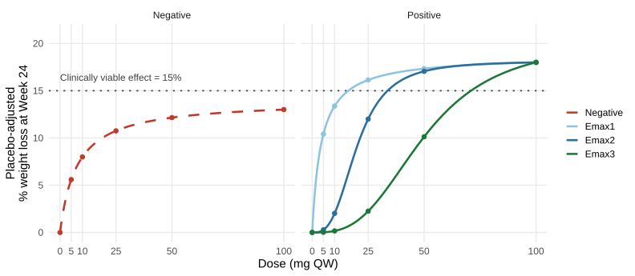
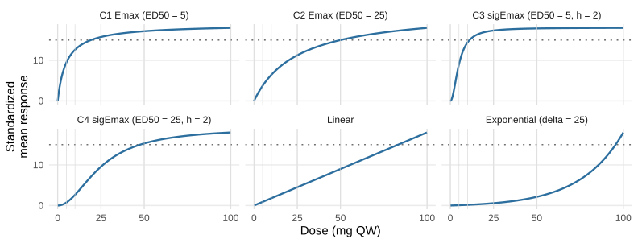
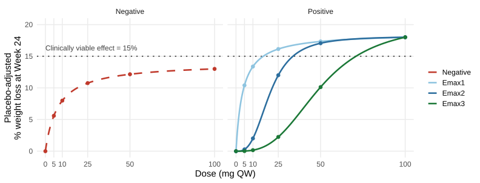
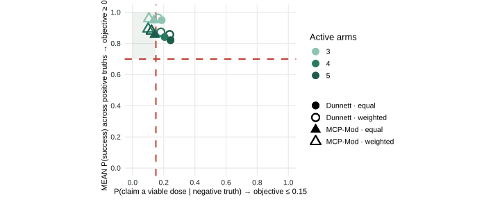
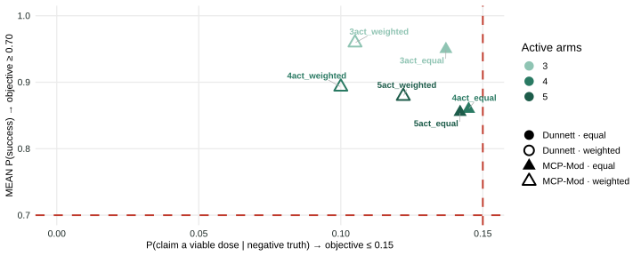
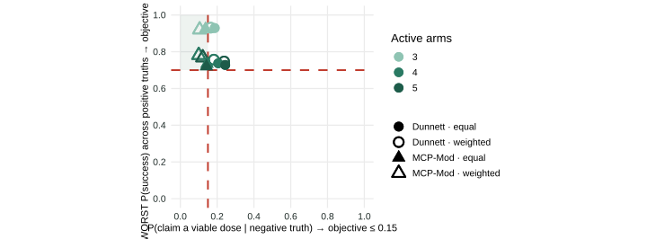
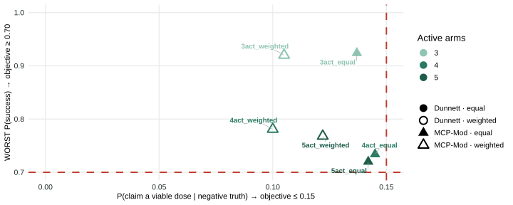
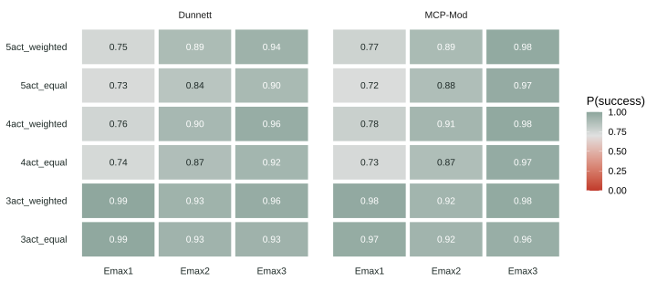
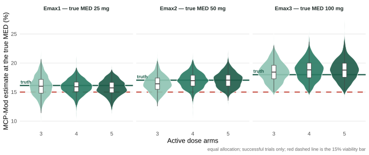

%%{init: {"themeVariables": {"fontSize": "18px", "edgeLabelBackground": "#f6faf8"}, "flowchart": {"htmlLabels": true, "useMaxWidth": false}}}%%
flowchart LR
A(Trial design options) -- Closed-form tool --> B(Operating characteristics) --> C(Decide)
A Framework for Informing Modern Clinical Development
Slides © 2026 Mitch Thomann & Saumil Shah — CC BY-SA 4.0
2026-09-16
This page gets you from no R installed to the first course example running. Four steps, about 15–20 minutes, most of it downloading. Do this before the workshop; the course itself does not wait for installation.
Stuck on a work laptop with no admin rights or a blocked proxy? Skip to the hosted fallback — nothing to install.
Already have R 4.4 or newer and RStudio? Skip to Get the course project.
Go to the Posit download page: https://posit.co/download/rstudio-desktop/
It links the matching R installer for your platform and the RStudio installer. Install R first, then RStudio, accepting the defaults.
Run the R installer, then the RStudio installer. No other choices are needed.
Open the R .pkg, then the RStudio .dmg. The installers detect Intel vs. Apple silicon — you do not need to choose.
Posit provides Ubuntu/Debian and RHEL/Fedora builds on the same page. On Ubuntu/Debian, open the downloaded .deb with the graphical package installer. Other distributions: ask the organizers before the day.
Check it worked. Open RStudio, click in the Console (left pane, not the Terminal tab), and run:
Any version 4.4 or newer is fine. The course was built with R 4.5.
Everything for the course ships as one project folder. Two ways to get it — pick one:
git clone https://github.com/saumil-sh/SC09-RISW26https://github.com/saumil-sh/SC09-RISW26/archive/refs/heads/main.zip in your browser and extract it somewhere normal — Desktop or your home folder. (Double-click the ZIP on Windows/macOS; unzip on Linux.) Not a temporary folder: your edits must survive the day. No Git or GitHub account needed. The ZIP extracts to a folder named SC09-RISW26-main — open that folder, not its parent.Either way: open the folder and double-click SC09-RISW26.Rproj. RStudio opens the project, sets the working directory, and activates the package environment automatically.
If a folder from an earlier attempt already exists, open it and continue — do not delete it; your work is inside.
Console alternative:
The course pins exact package versions so your results match the slides. Still in the project’s Console:
First run downloads and installs the packages (a few minutes). If it asks whether to proceed, answer y.
Notes:
renv::restore() installs R packages — not R, not RStudio, not system libraries.xcode-select --install) on macOS; standard build tools on Linux. Then rerun renv::restore().You should see one row of results — 100 patients, mean_y near 0.44, sd_y near 1. If so, you are ready for the workshop.
Reopen SC09-RISW26.Rproj and run whichever script you like. Downloading and renv::restore() are one-time setup.
If your machine cannot install software or reach CRAN, run the course on Posit Cloud — RStudio in your browser, nothing to install. The free tier is enough for the workshop day.
https://github.com/saumil-sh/SC09-RISW26.renv::restore() installs the pinned packages into the cloud project (a few minutes, first time only). One row of results and you are ready.
No Git? In step 2, choose New Project → Empty Project instead. In the Files pane (bottom-right), click Upload, upload the course ZIP from https://github.com/saumil-sh/SC09-RISW26/archive/refs/heads/main.zip, and tick the option to expand it. Then continue with step 3.
Your cloud project persists — you can come back to it after the workshop.
r blocks go in the RStudio Console. You never need the system terminal on the happy path.future::plan(future::sequential) to release the background workers.Start this now. Downloading and installing takes a few minutes, so kick it off while we do introductions.
Two ways to get the course project — pick one:
git clone https://github.com/saumil-sh/SC09-RISW26https://github.com/saumil-sh/SC09-RISW26/archive/refs/heads/main.zipThen open SC09-RISW26.Rproj in RStudio, run install.packages("renv") then renv::restore() in the Console. It worked if source("R/part-2/1-one-arm.R") prints one row of results.
Parts 2 and 3 are hands-on. You will get far more out of them with R open and the project already downloaded. The full walkthrough — including a no-install hosted fallback — is in Setup.
Mitch Thomann, PhD — Parts 1 & 3
Saumil Shah, PhD — Part 2
| Time | Session | |||
|---|---|---|---|---|
| 1 | 1:30 – 2:30 PM | Overview of Trial Simulations Mitch · 60 min |
Motivation · modern capabilities · regulatory guidance The five essential components, on one running example |
← you are here |
| 2:30 – 2:40 PM | 10 minute break | |||
| 2 | 2:40 – 3:40 PM | Programming Key Elements in R Saumil · 60 min |
Objectives · scenarios · data generation Complex designs · evaluation · parallelization |
after the break |
| 3:40 – 3:50 PM | 10 minute break | |||
| 3 | 3:50 – 5:00 PM | Hands-on Exercise Mitch · flexible |
Build one design end to end Compare designs across the full study |
after the break |
We do expect
We don’t expect
Everything in this course — the framework, the terminology, the specific recommendations — is built from years of hands-on trial simulation work across multiple organizations.
These are our professional opinions, not official recommendations or positions of our employers or any regulatory authority. Where regulatory guidance is directly relevant, we cite and quote it; everything beyond that is judgment we’ve formed through practice — and are glad to defend, but which you should weigh as one experienced perspective, not policy.
“In my opinion, it is more desirable to kill computer-generated patients, rather than real ones, in order to calibrate design parameters.”
— Peter Thall (Thall 2015)
%%{init: {"themeVariables": {"fontSize": "18px", "edgeLabelBackground": "#f6faf8"}, "flowchart": {"htmlLabels": true, "useMaxWidth": false}}}%%
flowchart LR
A(Trial design options) -- Closed-form tool --> B(Operating characteristics) --> C(Decide)
%%{init: {"themeVariables": {"fontSize": "18px", "edgeLabelBackground": "#f6faf8"}, "flowchart": {"htmlLabels": true, "useMaxWidth": false}}}%%
flowchart LR
D(New design option) -- Tool does not fit --> E(Approximate) --> F(Find another tool) --> G(Approximate a bit more)
Every design question that falls outside the tool becomes a negotiation about what we are willing to approximate.
Start in R.
%%{init: {"themeVariables": {"fontSize": "18px", "edgeLabelBackground": "#f6faf8"}, "flowchart": {"htmlLabels": true, "useMaxWidth": false}}}%%
flowchart LR
A(Design + truth scenarios) -- Write R code --> B(Operating characteristics) -- Evaluate --> C(Interpret)
C -- Ask the next question --> A
The goal is not “an R script that answers this question.” It is R code that is simple, adaptable and flexible enough to answer the next question — because there is always a next question.
Simulation lets you inspect individual patient-level replicates, not just averaged operating characteristics.
An 80% probability of success tells you the design usually works. It says little about:
Operating characteristics are the answer. Individual replicates are the explanation — and that is what earns buy-in.
Every one of these is a software engineering property as much as a statistical one. That is the argument for a framework rather than a one-off script.
Planning a fixed Phase 2 randomized dose-finding study in weight loss.
| Population | Adults with obesity |
| Endpoint | Percent change from baseline in body weight at Week 24 |
| Candidate doses | 0 (placebo), 5, 10, 25, 50, 100 mg QW; MTD = 100 mg |
| Max sample size | <300 |
| Allocation | Uncertain; team’s instinct is 1:1 across doses, but placebo and/or top dose could be weighted higher |
| Dose response | Shape uncertain; all preclinical and PK/PD data support monotonicity |
| Analysis | MCP-Mod or Dunnett’s Test |
| Clinically viable target | 15% placebo-adjusted weight loss (percent change from baseline) |
Every uncertainty above is a choice we have to make anyway — simulation just makes the cost of each choice visible.
From here, slides marked Example build up the specification of this study, component by component. By the end you will have a complete simulation plan — without having written the simulation.
%%{init: {"themeVariables": {"fontSize": "18px", "edgeLabelBackground": "#f6faf8"}, "flowchart": {"htmlLabels": true, "useMaxWidth": false}}}%%
flowchart LR
subgraph L[" "]
direction TB
O(<b>1. Objectives</b><br/>quantifiable targets) --> S(<b>2. Scenarios</b><br/>design x truth grid)
end
subgraph M[" "]
direction LR
D(<b>3. Data generation</b><br/>patient-level models) --> T(<b>4. Trial design</b><br/>milestones, analyses, adaptations)
end
E(<b>5. Evaluation criteria</b><br/>operating characteristics)
S --> D
T --> E
E -.->|refine scenarios| S
E -.->|reframe objectives| O
style L fill:none,stroke:none
style M fill:none,stroke:none
Every simulation has all five. Most disagreements are really about one of them — naming it keeps the discussion tractable.
Let’s go through them.
Turning a clinical question into something a computer can count.
If you cannot write the objective as mean(indicator_over_replicates) >= threshold, it is likely not yet an objective.
For our weight-loss dose-finding study:
Success = a significant dose-response signal (α = 0.10, one-sided) and a selected dose whose true effect is at least a clinically viable effect of 15%.
Under the negative truth no dose reaches 15%, so the second line is a false-positive decision — the probability of claiming a viable dose exists when none does.
Scenario = an input parameter combination we iterate across. Two types:
Design scenarios — our choices
Sample size, number of arms, allocation ratio, populations, decision rules, analysis model, timing of analyses, adaptive rules.
We control these. The output is for comparison
Truth scenarios — the world
Assumed or plausible realities governing treatment effect and outcomes: effect sizes, dose-response shape, variability, dropout, event rates.
We do not control these. The output is for robustness.
The cross-product of design × truth scenarios defines the simulation grid.
Simulation asks: across the truths we consider plausible, which of our choices performs best on the metrics we care about?
| Design parameter | Values explored |
|---|---|
| Number of active arms | 3 arms (25, 50, 100 mg) · 4 arms (10, 25, 50, 100 mg) · 5 arms (5, 10, 25, 50, 100 mg) |
| Total sample size | Fixed at 240 to start — deliberately simplifying |
| Allocation ratio | Equal (1:…:1) · Weighted placebo and top dose (2:1:…:1:2) |
| Analysis model | MCP-Mod and Dunnett — both computed on every replicate, so they compare methods rather than multiply the grid |
3 arm counts × 2 allocations = 6 design scenarios — each one a trial we could actually run.
Note that sample size is fixed here only for teaching. In practice it is often the first thing that would be varied
Assume placebo mean response = 0 and dose response follows a (sigmoid) Emax model:
| Scenario | Shape | (derived) | |||
|---|---|---|---|---|---|
| Negative | 7.5 mg | 1 | hyperbolic | 13.98 | 13% — never clinically viable |
| Emax1 | 4 mg | 1 | hyperbolic | 18.72 | 18% — true MED 25 mg |
| Emax2 | 20 mg | 3 | sigmoid | 18.14 | 18% — true MED 50 mg |
| Emax3 | 50 mg | 3 | sigmoid | 20.25 | 18% — true MED 100 mg |
is the asymptote, not the effect at a studied dose. If we fixed it at 18%, every curve would land below 18% at 100 mg by a different amount. So we instead fix and back-solve . Now the positive truths differ only in shape, not in what the top dose is worth.

| Design scenarios | 3 arm counts × 2 allocation schemes = 6 |
| Analysis models | MCP-Mod + Dunnett — run on every replicate, not extra grid rows |
| Truth scenarios | 1 negative + 3 positive = 4 |
| Simulation grid | 6 × 4 = 24 cells |
| Replicates per cell | 1,000 |
| Total virtual trials | 24,000 |
This is a deliberately simplified example, and it is already 24 cells. Adding four sample sizes makes it 96 — this blows up quickly. In code, represent it as a dataframe with one row per scenario and use tools like tidyr::expand_grid() to add and filter scenarios easily.
Statistical models are then used to simulate patient data, including:
For our study, deliberately the simplest thing that could work:
Note how little this model contains — and note that it is still a complete, runnable specification. Every elaboration you would want (dropout, a Week 12 interim readout, a correlated safety endpoint) is an addition to the code - not switching tools/modules
Everything that happens between “patients exist” and “we have a decision.”
| Milestones / analyses | When do we look, and what data are available at each look? |
| Analysis models | What we actually fit — need not (and deliberately should not, when testing robustness) match the data generation model |
| Adaptive elements | Interim analyses, futility and efficacy stopping, arm dropping or addition, response-adaptive randomization, sample size re-estimation |
| Decision rules | The deterministic function that turns an analysis into a Go, a No-Go, or a selected dose |
The decision rule is the part teams most often leave vague, and the part simulation is least able to guess.
Single final analysis at Week 24. Two analysis models, both at α = 0.10 (one-sided):
MCP-Mod — candidate model set:
| Candidate | Form | Parameters |
|---|---|---|
| C1 | hyperbolic Emax | = 5 |
| C2 | hyperbolic Emax | = 25 |
| C3 | sigmoid Emax | = 5, = 2 |
| C4 | sigmoid Emax | = 25, = 2 |
| Linear | linear | — |
| Exponential | exponential | = 25 |
Candidate labels (C1–C4) are deliberately distinct from the truth-scenario names (Emax1–Emax3): these are the shapes we fit, not the shapes the world takes.
Dunnett’s Test — all active doses vs. placebo, step-down.

Candidates are shapes, not truths. They span the plausible dose-response space so some candidate is close to whatever the world does. The dotted line is the 15% target; the grey verticals are the candidate doses.
Two potential answers to “is there a dose-response signal?”
| Dunnett (Dunnett 1955) | MCP-Mod (Bretz et al. 2005; Pinheiro et al. 2014) | |
|---|---|---|
| Question asked | Is any dose better than placebo? | Is there a dose-response signal, and what shape? |
| Uses dose ordering | No — arms are exchangeable labels | Yes — borrows strength across the dose range |
| Multiplicity over | Treatment arms | Candidate models |
| Estimation | Based on observed data | Based on fitted dose-response model |
| Cost of misspecification | None — model-free | Power loss if no candidate is close |
MCP-Mod is well established in this setting - dose-response modelling improves estimation of dose-response curves and can be advantageous for decision-making with more doses.
MED (minimally efficacious dose) = the lowest dose estimated to have a placebo-adjusted effect > 15%.
MCP-Mod: estimate MED from the fitted curve. Dunnett: estimate it from observed arm means.
“Acceptable dose selection” = selecting an MED that is either
Why the second clause? Phase 2 should not be scored as a failure just because it misses the exact MED. If it lands on a different dose that still delivers clinically meaningful efficacy, that is still a good outcome.
Success = statistical significance and acceptable dose selection.
Turning replicates into numbers a team can act on.
From the objectives:
Metrics we could add, once the objectives are met:
Neither is in the objectives, but they explain why two designs differ — and dose-response estimation matters beyond the go/no-go decision, since real dose selection weighs factors other than efficacy.
| Component | Our study |
|---|---|
| Objectives | ≥ 70% success under positive truths; ≤ 15% false positive under the negative truth |
| Scenarios | 6 design × 4 truth = 24-cell grid; both analysis models on every replicate |
| Data generation | Patient-level data generation model using sigmoid EMAX model |
| Trial design | Single final analysis; MCP-Mod or Dunnett at α = 0.10; MED rule; success = significance + acceptable dose selection |
| Evaluation | Success rate, false-positive rate, replicate-level inspection |
That is a mostly complete simulation plan for an initial simulation run. We have not written the simulation — but there is now nothing left to argue about except the code.
DoseFinding, rpact, brms, mmrm, survival tooling, copula tooling — the analysis models you want to simulate are R packages, and calling them beats reimplementing them.The moment the team asks something reasonable — “what about an extra endpoint at a Week 12 interim?” — a packaged tool either accommodates it or it does not. R always does.
This course teaches a specific R-based approach. It is not a survey of options.
Part 1 gave you the five components and a fully specified study. Part 2 writes them.
| Time | Session | |||
|---|---|---|---|---|
| 1 | 1:30 – 2:30 PM | Overview of Trial Simulations Mitch · 60 min |
Motivation · modern capabilities · regulatory guidance The five essential components, on one running example |
done |
| 2:30 – 2:40 PM | 10 minute break | |||
| 2 | 2:40 – 3:40 PM | Programming Key Elements in R Saumil · 60 min |
Objectives · scenarios · data generation Complex designs · evaluation · parallelization |
← you are here |
| 3:40 – 3:50 PM | 10 minute break | |||
| 3 | 3:50 – 5:00 PM | Hands-on Exercise Mitch · flexible |
Build one design end to end Compare designs across the full study |
after the break |
%%{init: {"themeVariables": {"fontSize": "18px"}, "flowchart": {"htmlLabels": true, "useMaxWidth": false}}}%%
flowchart LR
S["scenario<br/>(what we vary)"] --> G["generators<br/>(make patients)"]
G --> T["trial<br/>(when to look,<br/>what to compute)"]
T --> C["collect_results()<br/>(one table)"]
C --> E["summaries<br/>(power, error)"]
source("R/part-2/1-one-arm.R") printed one row of results earlier, you are set.rxsim · A language for describing clinical trials in R
Populations
Who receives what treatment?
Looks
When do we analyse?
Analysis
Which analysis method?
Decisions
What do we conclude?
Start with one arm — analyse at the end.
Add a control arm — compare the treatments.
Add an interim look — use the same analysis earlier.
Keep the parts you trust, and change what the next question needs.
R/work-one-arm.R together, one block per slide.| 💾 Save as | 🔑 Answer key |
|---|---|
R/work-one-arm.R |
R/part-2/1-one-arm.R |
n_total matters first: keep it distinct from the generator’s n.n_sim just counts whole-trial reruns; we will use it later.function(n) and returns one row per patient.# Build the replicate trial(s). No dropout, one patient per time unit.
set.seed(20260916)
trials <- replicate_trial(
trial_name = "one_arm",
sample_size = n_total,
arms = "trt",
allocation = 1,
enrollment = function(n) rep(x = 1, times = n),
dropout = NULL,
analysis_generators = analysis_generators,
population_generators = list(trt = gen_trt),
n = n_sim
)replicate, timepoint, analysis, then your columns from analyze().run_trials() stores results inside the trial objects, so you do not assign its output. That is the one object-oriented idea in this hour.mean_y is close to the mu = 0.5 we generated from, but not exact. That gap is sampling noise, and it is the whole reason we simulate.mu <- 0 and rerun. What do you expect mean_y to be?| 💾 Save as | 🔑 Answer key |
|---|---|
R/work-one-arm.R → R/work-two-arm.R |
R/part-2/2-two-arm.R |
arm column and run a two-sided Welch t-test.# Split the snapshot by its `arm` column and run a two-sided Welch t-test.
# Name the two vectors explicitly so `effect` is always treatment minus control.
analyze <- function(df, current_time) {
y_trt <- df$y[df$arm == "trt"]
y_pbo <- df$y[df$arm == "pbo"]
tt <- t.test(x = y_trt, y = y_pbo)
data.frame(
n_trt = length(y_trt),
n_pbo = length(y_pbo),
effect = mean(y_trt) - mean(y_pbo),
p_value = tt$p.value
)
}effect near the true 0.5, and a small p-value. At alpha = 0.05, this single trial rejects.mu_trt <- 0 and rerun. What happens to effect and p_value?| 💾 Save as | 🔑 Answer key |
|---|---|
R/work-two-arm.R → R/work-two-look.R |
R/part-2/3-two-look.R |
# Two looks instead of one. The same analyze() serves both. interim fires at
# 50% enrolled, final at 100%. The final look includes the interim patients with
# their original outcomes; rxsim snapshots one accumulating trial.
analysis_generators <- list(
interim = list(
trigger = enroll_trigger(
fraction = 0.5,
sample_size = n_total
),
analysis = analyze
),
final = list(
trigger = enroll_trigger(
fraction = 1,
sample_size = n_total
),
analysis = analyze
)
)n_sim = 5, you get 10 rows: 5 trials × 2 looks. The replicate column pairs the interim and final row from the same trial. replicate analysis n_trt n_pbo effect p_value
1 interim 21 29 0.6818565 0.016
1 final 50 50 0.5088159 0.006
2 interim 25 25 0.5080790 0.061
2 final 50 50 0.5449694 0.005
3 interim 24 26 1.0318055 0.000
3 final 50 50 0.5447757 0.003
4 interim 25 25 0.7569564 0.009
4 final 50 50 0.7904162 0.000
5 interim 20 30 0.4793942 0.082
5 final 50 50 0.4008259 0.047| 💾 Save as | 🔑 Answer key |
|---|---|
R/work-two-look.R → R/work-grid.R |
R/part-2/4-grid.R |
delta is treatment mean minus control mean. Keep the seed and the calls outside; a function that seeds itself returns the same trial every time. n_total delta replicate analysis effect p_value
100 0.5 1 interim 0.3433312 0.162
100 0.5 1 final 0.4771605 0.008
100 0.5 2 interim 0.1767702 0.518
100 0.5 2 final 0.2254326 0.221
100 0.5 3 interim 0.5615070 0.049
100 0.5 3 final 0.7284526 0.001n_total and delta. n_total delta
50 0.0
100 0.0
50 0.5
100 0.5lapply() runs one row at a time, and do.call(rbind, ...) stacks the results into one table. n_total delta reject
1 50 0.0 0.0
2 100 0.0 0.0
3 50 0.5 0.4
4 100 0.5 0.6reject means p_value < 0.05 at the final look. delta = 0 rows estimate Type I error; delta = 0.5 rows estimate power.delta = 0 row as you raise n_sim from 5 to 200?| 💾 Save as | 🔑 Answer key |
|---|---|
R/work-grid.R → R/work-parallel.R |
R/part-2/5-parallel.R |
simulate_scenario() and grid stay the same. Only the line that runs the grid changes.multisession works on Windows, macOS, and Linux.future_lapply() is the parallel replacement for lapply(): same inputs, same output.future.seed gives each scenario its own reproducible random stream, so workers do not simulate the same patients.n_sim = 200 on this machine, the timing script measured 7.36 s sequential versus 7.11 s parallel. Small grids barely win because worker startup is a fixed cost.population_generator functionanalyze(df, current_time); you design the output rowenroll_trigger()R/part-2/*.R in the course project| Time | Session | |||
|---|---|---|---|---|
| 1 | 1:30 – 2:30 PM | Overview of Trial Simulations Mitch · 60 min |
Motivation · modern capabilities · regulatory guidance The five essential components, on one running example |
done |
| 2:30 – 2:40 PM | 10 minute break | |||
| 2 | 2:40 – 3:40 PM | Programming Key Elements in R Saumil · 60 min |
Objectives · scenarios · data generation Complex designs · evaluation · parallelization |
done |
| 3:40 – 3:50 PM | 10 minute break | |||
| 3 | 3:50 – 5:00 PM | Hands-on Exercise Mitch · flexible |
Build one design end to end Compare designs across the full study |
← you are here |
| Endpoint | % change from baseline in body weight at Week 24, |
| Doses | 0 (placebo), 5, 10, 25, 50, 100 mg QW |
| Sample size | 240 total, the same for every design |
| Designs | 3 / 4 / 5 active arms × equal or weighted allocation = 6 |
| Truths | 1 negative + 3 positive Emax curves = 4, with true MEDs of 25 / 50 / 100 mg |
| Analyses | MCP-Mod and Dunnett, both on every replicate, |
| Success | statistical significance and acceptable dose selection |
6 × 4 = 24 cells × 1,000 replicates = 24,000 virtual trials — already run.
%%{init: {"themeVariables": {"fontSize": "18px"}, "flowchart": {"htmlLabels": true, "useMaxWidth": false}}}%%
flowchart LR
S["<b>1-scenarios.R</b><br/>design x truth grid"] --> D["<b>2-datagen.R</b><br/>population generators"]
D --> T["<b>3-design.R</b><br/>triggers + analyses + MED"]
T --> E["<b>4-evaluate.R</b><br/>objectives + OCs"]
E --> R["<b>6-runsim.R</b><br/>runs the grid via run_one()"]
Four numbered components, then the driver that runs them — the same five ideas from Part 1, in the same rxsim vocabulary Saumil used in Part 2. run_one() is the helper in R/part-3/5-run-one.R, exactly the shape of Part 2’s simulate_scenario().
We are not walking through this today. It is in the repo, it runs, and it is yours to pull apart afterwards.
Today we work with what it produced.

The true MED — the lowest studied dose truly worth ≥ 15% — is 25 / 50 / 100 mg for Emax1 / Emax2 / Emax3, and none for the negative truth. That is the target each trial is trying to recover.
Every positive truth reaches 18% at 100 mg. They differ only in where they cross the dotted line — that is the MED problem each design has to solve.
Open R/part-3/7-exercise.R. It loads the completed study, plus the same helpers used to score it.
24,000 rows x 31 columns – 6 designs x 4 truths x 1,000 replicates. One design, all four truths, first two replicates:
| design | truth | replicate | dunn_sig | dunn_med | mcp_sig | mcp_med | obs_d100 |
|---|---|---|---|---|---|---|---|
| 3act_equal | Negative | 1 | 1 | NA | 1 | NA | 13.1 |
| 3act_equal | Negative | 2 | 1 | NA | 1 | NA | 11.3 |
| 3act_equal | Emax1 | 1 | 1 | 25 | 1 | 25 | 21.2 |
| 3act_equal | Emax1 | 2 | 1 | 25 | 1 | 25 | 18.2 |
| 3act_equal | Emax2 | 1 | 1 | 50 | 1 | 50 | 18.9 |
| 3act_equal | Emax2 | 2 | 1 | 50 | 1 | 50 | 15.1 |
| 3act_equal | Emax3 | 1 | 1 | 100 | 1 | 100 | 15.2 |
| 3act_equal | Emax3 | 2 | 1 | 100 | 1 | 100 | 18.2 |
8 of 31 columns shown — the rest are obs_d* / mod_d*, the observed and fitted effect at each studied dose.
reps — one row per simulated trial
| Column | |
|---|---|
design, truth |
which cell |
dunn_sig, mcp_sig |
signal detected? |
dunn_med, mcp_med |
dose selected (NA = none) |
dunn_min_p, mcp_min_p |
the p-values |
results$oc — the same thing pre-summarised.
Do it from reps first, then use results$oc to check.
From 4-evaluate.R:
That file is the single definition of success — the stored results used these same functions, so your numbers are directly comparable.
Which design should we run, and why?
Do the ones you find interesting, not all six.
Stuck? R/part-3/8-exercise-solution.R produces exactly what comes next.
Reminder — the two objectives from Part 1:
A. ≥ 70% success under each positive truth, where success = a signal detected and an acceptable dose selected.
B. ≤ 15% chance of claiming a viable dose under the negative truth, where no dose is viable.
| Design | Method | Worst success | Binding truth | Neg. claim | A (≥0.70) | B (≤0.15) | Both |
|---|---|---|---|---|---|---|---|
| 3act_weighted | Dunnett | 0.931 | Emax2 | 0.165 | yes | no | fail |
| 3act_equal | Dunnett | 0.929 | Emax2 | 0.187 | yes | no | fail |
| 3act_equal | MCP-Mod | 0.924 | Emax2 | 0.137 | yes | yes | PASS |
| 3act_weighted | MCP-Mod | 0.920 | Emax2 | 0.105 | yes | yes | PASS |
| 4act_weighted | MCP-Mod | 0.781 | Emax1 | 0.100 | yes | yes | PASS |
| 5act_weighted | MCP-Mod | 0.768 | Emax1 | 0.122 | yes | yes | PASS |
| 4act_weighted | Dunnett | 0.757 | Emax1 | 0.182 | yes | no | fail |
| 5act_weighted | Dunnett | 0.747 | Emax1 | 0.238 | yes | no | fail |
| 4act_equal | Dunnett | 0.737 | Emax1 | 0.206 | yes | no | fail |
| 4act_equal | MCP-Mod | 0.734 | Emax1 | 0.145 | yes | yes | PASS |
| 5act_equal | Dunnett | 0.728 | Emax1 | 0.244 | yes | no | fail |
| 5act_equal | MCP-Mod | 0.720 | Emax1 | 0.142 | yes | yes | PASS |
6 of 12 meet both — and the four that fail do not all fail the same objective.

Read it like an ROC curve: false positives across, success up, good corner = top-left. The shaded box is where both objectives hold.

Every design that passes uses MCP-Mod — Dunnett misses the claim-rate objective at all six. Among the survivors, adding doses lowers mean success a little (0.85 to 0.96) but all stay above 0.70, so 3, 4 and 5 arms remain viable.

This is the stricter test: a design has to clear the bar under every plausible truth, not just on average.
This is the figure you put in front of a design team — every design, both objectives, judged on its worst truth. (That was exercise question 6.)

The same MCP-Mod designs still pass under their worst truth: 0.72 to 0.92 against 0.70, so 3, 4 and 5 arms remain viable.

Grey is exactly the 70% objective: red misses it, teal clears it. Emax1 and Emax2 are comfortable almost everywhere — Emax3 is where every design is weakest.

Each violin is the MCP-Mod estimate at that truth’s true MED, across trials that succeeded. Adding doses does not cost you precision here — going from 3 to 5 active arms means fewer patients per dose, yet the spread is flat or tighter (SD 1.74 → 1.28 under Emax1, 1.43 → 1.32 under Emax2). MCP-Mod fits a curve across all doses, so the extra dose-response information offsets the smaller per-arm sample.
The iteration is the evidence that the design was chosen, not just arrived at.
Three doors we walked past — all openable with what you already have:
rxsim runs one trial per core, so you parallelize across scenario rows — the grid is already the unit of work.
furrr workers on a laptoptargets makes each cell a target — it caches results and re-runs only what changed, which matters when the tenth question is “what if we add a dose?”targets + crew extends the same pipeline onto an HPC without rewriting the simulation — extremely well equipped for exactly this kind of computation. Worth watching: R in Pharma talk on targets + crewThe reason this scales is that nothing above is simulation-specific. A grid, a function over its rows, and a cache.
Monte Carlo error is a design choice, not a detail. Near our 0.70 objective:
| Replicates per cell | Monte Carlo SE |
|---|---|
| 1e+03 (today) | ±0.0145 |
| 1e+04 | ±0.0046 |
| 1e+05 | ±0.0014 |
How I choose it in practice
Or pick it from the decision: how big a difference between two designs would actually change what you run? Resolve that, and stop.
Each component has a testable contract; they are easier to test than the whole simulation at once.
NA when nothing clears Δtestthat on these components, run automatically, is the difference between a simulation you believe and one you merely hope about.
Double programming belongs here too — on the custom rules, not the packages. The MED rule and success criterion carry the decision, and an error there is silent.
A personal view — opinion, not guidance. Simply what has worked for me.
It is a loop, not a prompt:
Everything you have seen today was written this way
Every next question is a new row, not a new tool.
Nothing today depended on a particular tool. What we are actually proposing is a shared way of expressing a trial:
Tools will change — rxsim may not be what you end up using. The framework is what we are asking you to take home.
The goal is not a shared package. It is a common language for design.